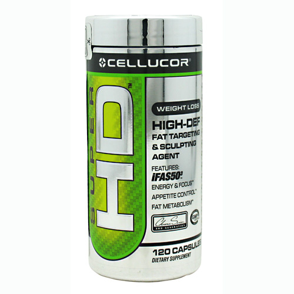

Información de Super HD :
Componentes de Super HD :
IFAS503 es un nuevo ingrediente compuesto por tres ácidos grasos sintasa (FAS) inhibidores:.
Extracto de Camellia sinensis, Tuber fleeceflower extracto y extracto de muérdago chino.
Capsimax es una forma encapsulada con patente pendiente de la prima, el extracto de pimiento natural,
altamente concentrado. Usando una matriz de propiedad de excipientes y recubrimientos, extracto de capsicum
Capsimax ofrece a los usuarios la máxima eficacia de capsaicinoides al tiempo que reduce la posibilidad
de irritación oral o gástrica, eliminando por tanto los efectos secundarios negativos de la suplementación
con pimiento tradicional. En varios ensayos clínicos se sugirió capsicum Capsimax ayuda a aumentar
la termogénesis inducida por
la dieta, gestionar el apetito y apoyar la composición corporal saludable.
Toothed Clubmoss :
Toothed Clubmoss es una fuente natural de la huperzina A, un compuesto activo que puede ayudar a la memoria
de apoyo, el aprendizaje y la concentración.
La eficacia de la huperzina puede atribuirse a su capacidad para inhibir la acetilcolinesterasa, la enzima que
descompone la acetilcolina en el cerebro. Mediante la inhibición de la enzima que lo descompone, más acetilcolina
puede estar disponible para estimular las neuronas, el apoyo a varias de las funciones del cerebro.
Rhodiola :
Rhodiola es un adaptógeno natural, un compuesto que promueve la energía mental, la resistencia y el enfoque
mientras el apoyo contra el estrés leve.
Rhodiola también puede tener varios efectos positivos sobre la producción del ejercicio. En estudios recientes,
Rhodiola ha sido sugerido para promover la utilización de ácidos grasos y apoyar a la resistencia del cuerpo al ejercicio
físico extenuante.
Rauwoliscine :
Rauwoliscine es alfa-yohimbina, un análogo de la yohimbina. Rauwoliscine amplifica los niveles de energía y apoya
el proceso de quema de grasa del cuerpo. Alpha-yohimbina tiene un efecto más específico que la yohimbina sin los
efectos secundarios.
Yohimbe Bark Extract :
Yohimbe Bark Extract es el extracto del árbol yohimbe de África. Yohimbe puede ayudar a promover la dopamina,
la serotonina disminuye, y prevenir la descomposición de la norepinefrina en el cuerpo. Yohimbe puede ayudar
a apoyar a respuestas similares a la adrenalina prolongados en el cuerpo. Yohimbe puede actuar como un agonista
de los receptores adrenérgicos, la inducción de respuestas de lucha o
huida en el cuerpo, como aumento de la frecuencia cardíaca y la lipólisis. Yohimbe también es compatible con
la vasodilatación, lo que puede ayudar a promover el flujo de sangre a los músculos y uso de oxígeno por el cuerpo.
N-acetil-L-tirosina :
N-acetil-L-tirosina es una forma de absorción más rápida y bio-disponible de L-tirosina. L-tirosina es un
aminoácido precursor de la adrenal y hormonas de crecimiento epinefrina, dopamina y norepinefrina. Estas hormonas
apoyan la liberación de hormona de crecimiento , y puede ayudar a contribuir a los niveles más altos de energía,
conciencia y estado de alerta mental.

{kind=link}
{kind=link}
{kind=link}